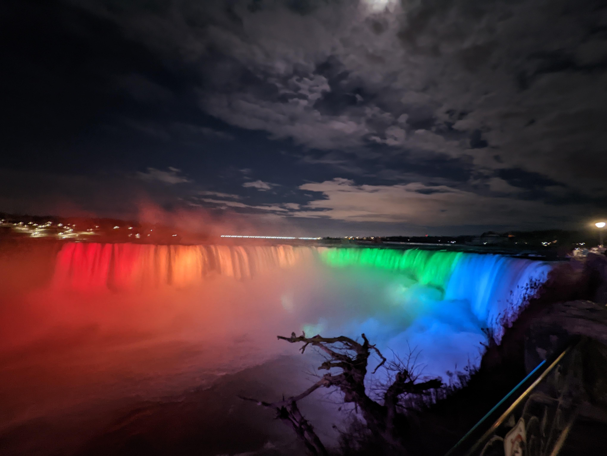
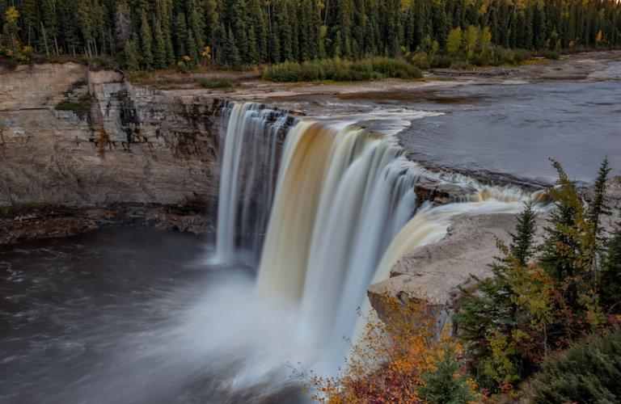
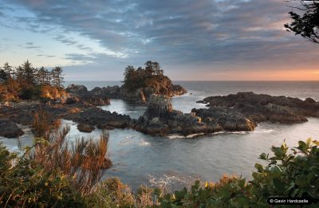

| Ontario |
Niagara Falls, Kakabeka Falls, Toronto |
To see Niagara Falls at night with the lights. To see a friend in Toronto. |
May/June |
$1500 |
|  |
| Nova Scotia |
Halifax, Bay of Fundy Shore, Three Sisters Rocks, Skyline Trail |
To experience summer on the East Coast. |
July |
$1500 |
 |
| Northwest Territories |
Cameron River Falls, Alexandra Falls, Wood Buffalo National Park |
To see the northern landscapes and hopefully some wildlife. |
August |
$1500 |
|  |
| Yukon |
Yukon Wildlife Preserve, Miles Canyon, SS Klondike Historic Site, Whitehorse |
To see the northern lights. |
August |
$1500 |
 |
| British Columbia |
Uclulet, Tofino, Liard River Hot Springs |
To savour the remnants of summer in BC and to experience autumn on the West Coast. To
find more
waterfalls. |
September/October |
$1500 |
|  |